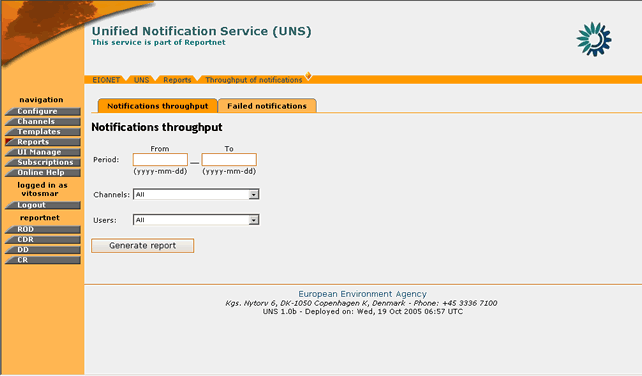
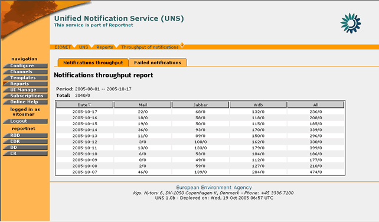
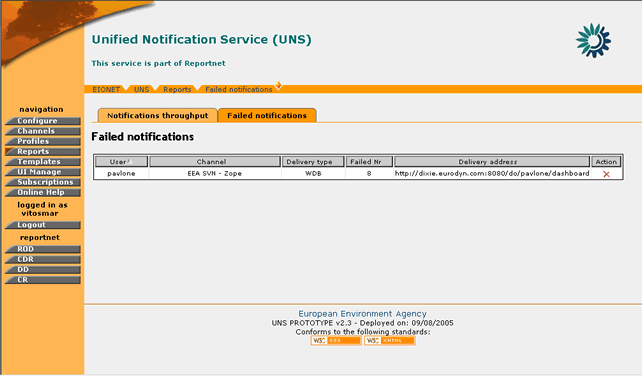

4.6 Management and Monitoring of Notifications
4.6.1 General Principles
The UNS gives the possibility to the administrator to get feedback on the system performance in terms of the amount of notifications sent for a given time period as well as a report of notifications which failed to be delivered.
This is realized through the “Reports” section, where privileged users can generate such reports.
The system allows the administrator to view reports for any given time period as well as to define the report on specific users and channels.
4.6.2 Notifications Throughput Report
In order to generate a Notifications Throughput report, you must be logged in as UNS Administrator.
If you have administrator privileges, then the following steps must be followed:
STEP 1 – Login
If you are not already logged in, see: Authenticate User Account.
STEP 2 – Click on “Reports” button on the navigation bar.
In order to create a Notifications Throughput Report, the “Notifications throughput” tag must be selected.

Figure 19: Notifications Throughput page
STEP 3 – Fill-in the Notifications Throughput Form
The user must fill-in the corresponding form depending on the data he/she wishes to view.
The period field is used to specify the time interval which is going to be taken into consideration for the report, while the Channel and User fields allow the user to narrow down the report results to a specific channel, or a specific user or both.
The option “All” if selected for both Channel/User fields, will denote the generation of a report listing all notifications sent in all channels for the specified time period.
STEP 4 – Receive Notifications Throughput Report
After filling-in the form, the user must select the “Generate Report” button. When this is done, the results of the user’s search will be displayed.

Figure 20: Sample Notifications Throughput Report
The report is comprised of the following parts:
- At the top, a summary of the search criteria is presented, as well as the Total number of successful Notifications sent for the given time period.
- The analytical table, where the user may observe the amount of notifications throughput in a daily basis, split by the type of notification sent (Mail, Jabber, WDB, all)
- For any Notification Throughput data, two numbers are returned which are split by a forward slash “/”. The part on the left of the slash represents the number of successful notifications sent while the right part represents the number of failed notifications.
In summary:
Step |
Edit Notification Template |
1 |
Login |
2 |
Click on “Reports” button |
3 |
Fill-in Notifications Throughput Form |
4 |
Receive Notifications Throughput Report |
4.6.3 Failed Notifications Report
In order to view a Failed Notifications report, you must be logged in as UNS Administrator.
If you have administrator privileges, then the following steps must be followed:
STEP 1 – Login
If you are not already logged in, see Authenticate User Account.
STEP 2 – Click on “Reports” button on the navigation bar.
In order to view the notifications which failed to deliver, the “Failed Notifications” tag must be selected.
STEP 3 – View Failed Notifications Report
By selecting the “Failed notifications” tag, the following screen will be displayed:

Figure 21: Sample Failed Notifications Report
This report shows all failed notifications (if any) recorded in the system. Hence, there is no time interval specification like in Notifications Throughput reports.
The report displays the user for which these notifications were intended, the channel from which they originated the delivery type (email, WDB, Jabber), the delivery address which failed and the number of failed notifications.
STEP 4 – Unsubscribe User from Channel
If any failed notifications exist for a user, the administrator may remove the user’s subscription that causes these notifications to appear. In this way, the flood of the system with invalid subscriptions is prevented.
The administrator can perform this directly through the failed notifications report, by selecting the  button in the “Action” column.
button in the “Action” column.
In summary:
Step |
View Failed Notifications Report |
1 |
Login |
2 |
Click on “Reports” button |
3 |
View Failed Notifications Report |
4 |
Unsubscribe User from Channel |